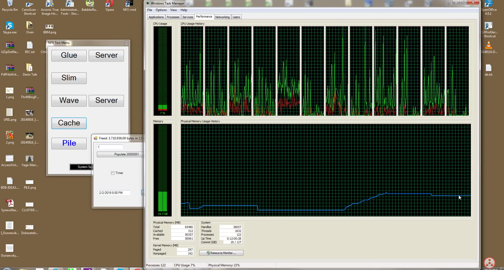
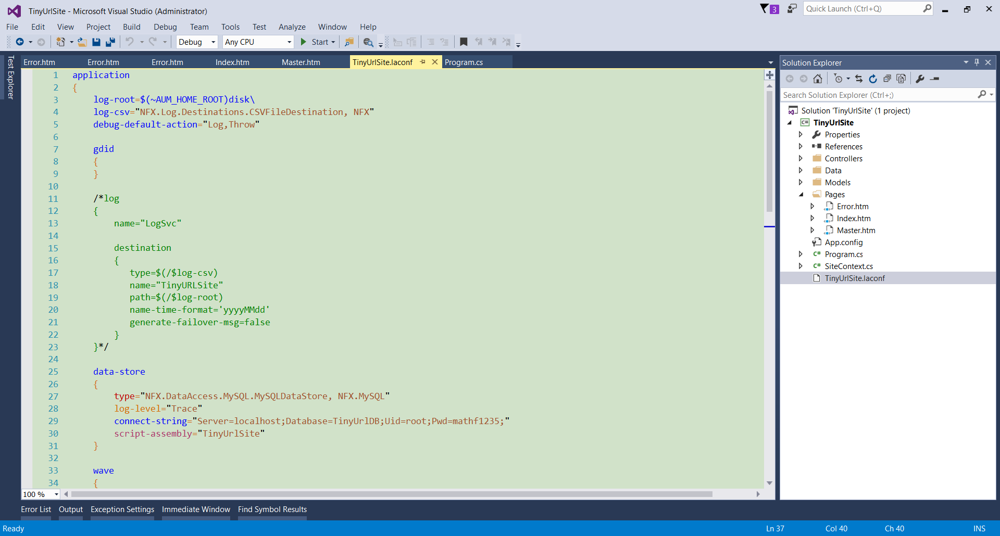
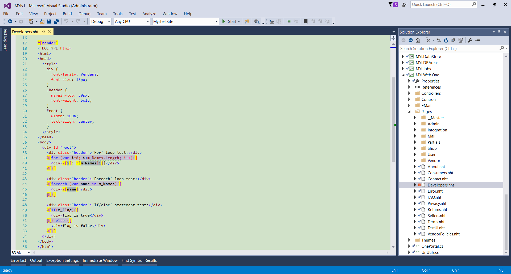
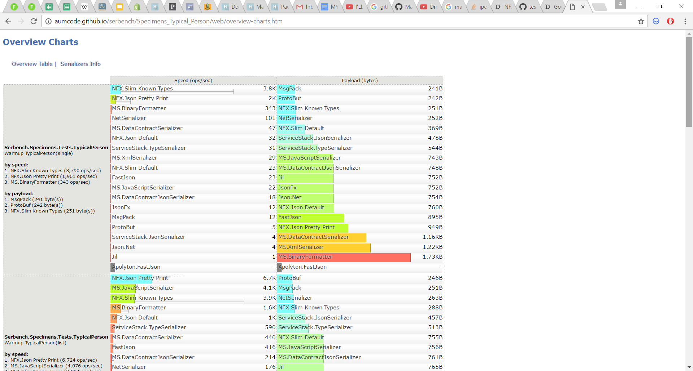
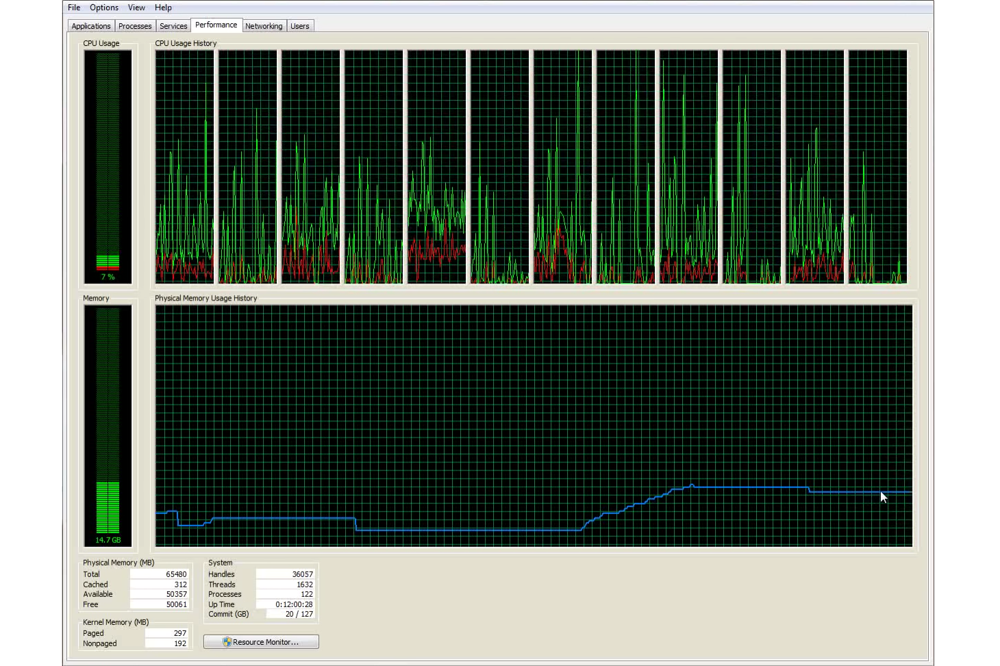
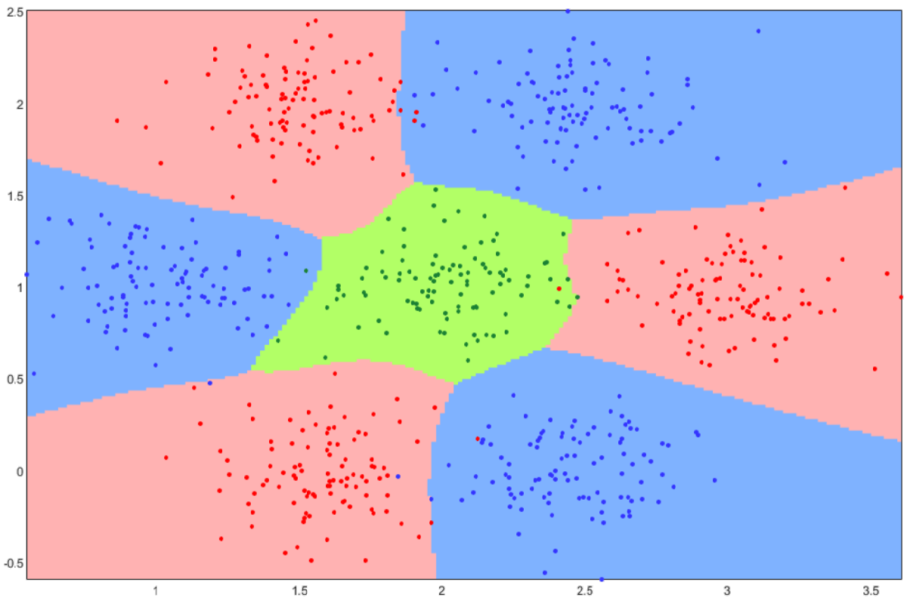

NFX
NFX library is a practical implementation of UNISTACK software development methodology/process, where all tiers of code/system/team/business are interfacing via the same unified protocol. NFX is written in C# and runs on a CLR machine, however it has very little to do with .NET because it uses only very basic CLR classes with no Windows-specific components or “fat” .NET classes, which implies full cross-platform behavior. Therefore, any NFX-based applications can easily be deployed both on Windows and Linux/Mono platforms. This framework contains truly unique intellectual assets and allows for unconventional things that significantly boost performance and simplify the development (such as stateful web). NFX allows to create complex, possibly distributed large-scale, server systems.
The majority of the achievements are possible because of two key things:
- Unification of design - all components are written in the same way
- Sophisticated serialization mechanism aka "teleportation"
Promoting:
- Stateful WEB programming (not mandatory)
- Full utilization of modern RAM capacities in-proc (i.e. 128 Gb resident) without GC problems
- Serving 50,000+ BUSINESS web requests a second (with logic) on a 4 core 3.0 GHz machine looking up data in a 300,000,000 business object cache in-RAM (no need for 3rd party cache)
List of NFX public resources:
NFX NuGet package
Latest public version of NFX can be found here
NFX demos can be found here
NFX technology overview videos can be found on YouTube channel
NFX Slim serializer benchmarks can be found here
     
License: Apache 2.0